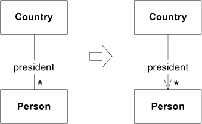
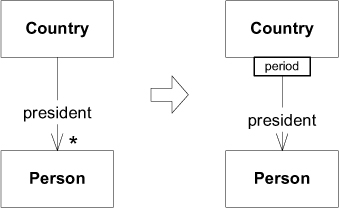
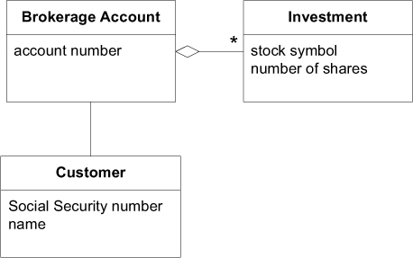
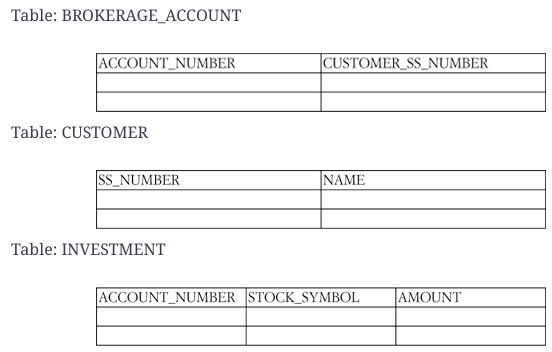
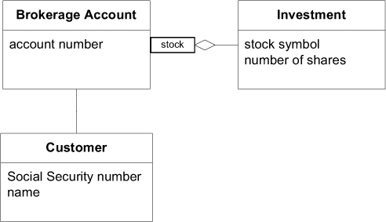
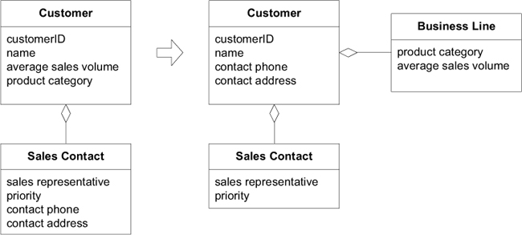
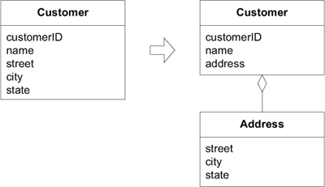

Ch 5: A Model Expressed in Software
Associations (關聯)
- bidirectional association (雙向關聯) 到 unidirectional association (單向關聯)

美國有很多任總統。國家與總統是雙向的關係。但是，當提到 George Washington (喬治・華盛頓) 時，很少會問是哪個國家的總統。關聯的方向，反映了領域中自然的走訪傾向。
- qualified relationship (限定關係)

一個國家在一個期間只會有一位總統。限定條件將「一對多」的關係簡化成「一對一」的關係。
範例: Brokerage Account 中的關聯

符合模型的一種實作:
public class BrokerageAccount {
String accountNumber;
Customer customer;
Set investments;
// Constructors, etc. omitted
public Customer getCustomer() {
return customer;
}
public Set getInvestments() {
return investments;
}
}
同樣也符合模型，但是從關聯式資料庫取出資料的另一種實作:

public class BrokerageAccount {
String accountNumber;
String customerSocialSecurityNumber;
// Omit constructors, etc.
public Customer getCustomer() {
String sqlQuery =
"SELECT * FROM CUSTOMER WHERE" +
"SS_NUMBER='"+customerSocialSecurityNumber+"'";
return QueryService.findSingleCustomerFor(sqlQuery);
}
public Set getInvestments() {
String sqlQuery =
"SELECT * FROM INVESTMENT WHERE" +
"BROKERAGE_ACCOUNT='"+accountNumber+"'";
return QueryService.findInvestmentsFor(sqlQuery);
}
}
透過限定 Brokerage Account 與 Investment 的關聯，簡化多重性。限定每支股票只能對應一筆投資。

程式碼調整如下:
public class BrokerageAccount {
String accountNumber;
Customer customer;
Map investments;
// Omitting constructors, etc.
public Customer getCustomer() {
return customer;
}
public Investment getInvestment(String stockSymbol) {
return (Investment)investments.get(stockSymbol);
}
}
public class BrokerageAccount {
String accountNumber;
String customerSocialSecurityNumber;
//Omitting constructors, etc.
public Customer getCustomer() {
String sqlQuery = "SELECT * FROM CUSTOMER WHERE SS_NUMBER='"
+ customerSocialSecurityNumber + "'";
return QueryService.findSingleCustomerFor(sqlQuery);
}
public Investment getInvestment(String stockSymbol) {
String sqlQuery = "SELECT * FROM INVESTMENT "
+ "WHERE BROKERAGE_ACCOUNT='" + accountNumber + "'"
+ "AND STOCK_SYMBOL='" + stockSymbol +"'";
return QueryService.findInvestmentFor(sqlQuery);
}
}
Entities (a.k.a Reference Objects)

將與識別相關的屬性與 Entity 關聯在一起。
customerId是Customer的唯一識別碼(identifier)。name通常是識別人的方式之一。- 這裡，將
contact phone與contact address與Customer關聯在一起。- 這兩個屬性取決實際的應用。例如
Customer有很多不同目的用途的contact phone，有可能就與識別Customer的方式無關，應將其保持在原來的Sales Contact中。
- 這兩個屬性取決實際的應用。例如
將與識別不相關的屬性，從 Entity 移出。
Value Objects
- value object 是不可變的(immutable)。
- 不需要 identity
- 不要設計得像 Entity 一樣複雜

Value Object 是一個概念整體。street, city, state 不應該是 Person 的個別屬性，它們應該是一個整體 - Address。這裡 Customer 為 Entity，Address 為 Value Object。
Value Object 提供最佳化的一種選擇 - Flyweight Pattern (GoF)。
Service
在 Ubiquitous Language 中表達操作，是動詞，而非名詞。
不同 Layer 層有各自的 Servie。這裡說的是 Domain Layer 中的 Service。
Domain Service 避免客戶端與 Entity Objects, Value Objects 耦合。
範例
銀行使用寄電子郵件的應用程式，當帳戶餘額低於臨界值，即發送通知信給客戶。